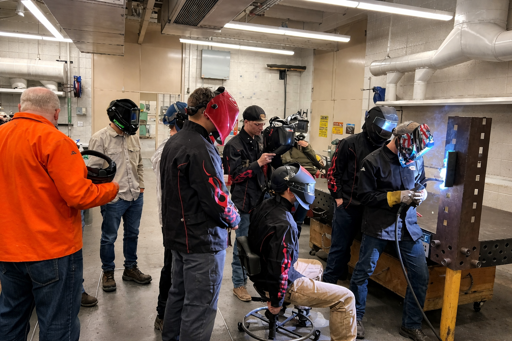
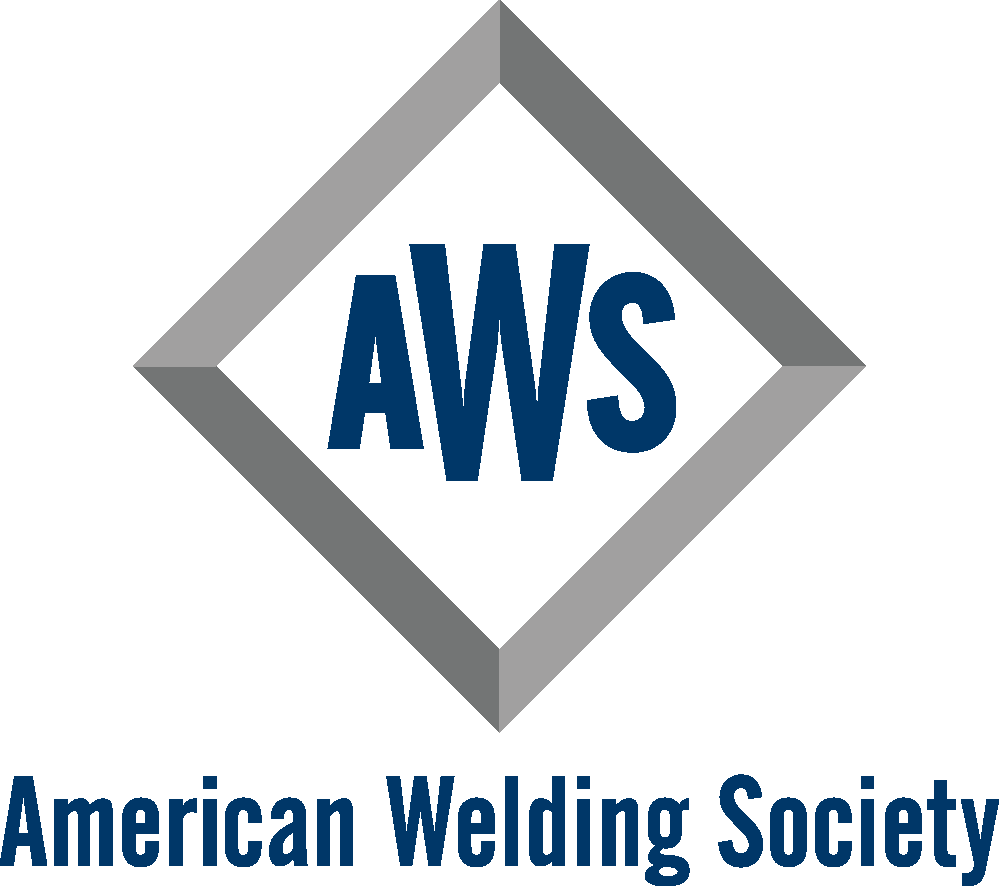
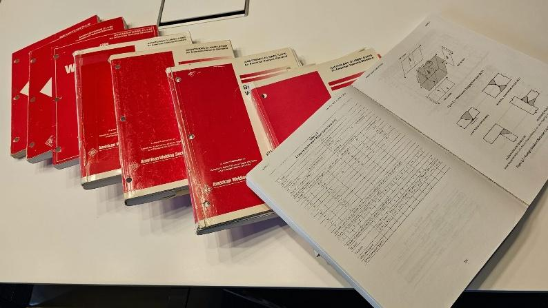
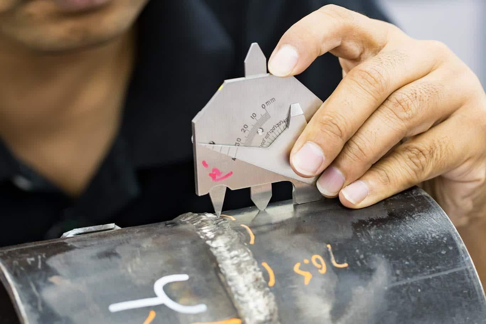
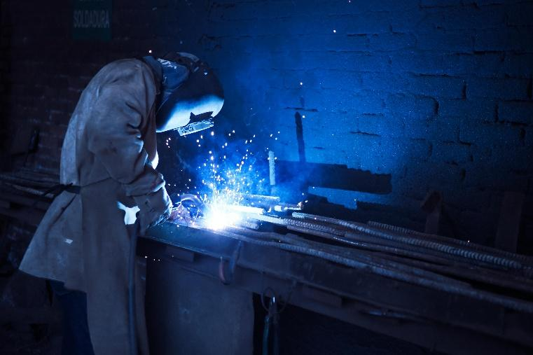

AWS is the best way to get involved with the welding community. From getting information about training, receiving scholarships, to learning about the newest inventions. Here at BYU-I We have weekly meetings in the Austin building Thursday @ 11:30 am in room 202. We also have fun events that happen throughout the school semesters. Check out the events we have going on to get involved!

AWS was founded in 1919 as a nonprofit organization with a mission: "to advance the science, technology, and application of welding and allied joining and cutting processes worldwide, including brazing, soldering, and thermal spraying." Their global vision is to help save lives with advancing technology. This is why Welding Engineering is so important. AWS is here to help "Welding move forward." Please visit their website to learn more: American Welding Society (AWS) - Welding Excellence Worldwide

A big part of how they save lives is with safety codes. Safety codes are created by an extreme amount of testing and recording data. It takes time and effort to make these codes up to date, and a lot of engineers take their personal time to improve these codes because it is their passion. Without these codes the world will be a much more dangerous place.
Welding engineering focuses on the science, design, and analysis behind welding processes. Welding engineers study metallurgy, materials science, heat transfer, and mechanical properties to determine the best ways to join metals safely and efficiently. They design welding procedures, select appropriate materials and welding methods, and ensure that welds meet safety codes and industry standards. Welding engineers are often involved in research, quality control, failure analysis, and developing new welding technologies. Their work is more theoretical and technical, requiring strong knowledge of engineering principles to ensure structures such as bridges, pipelines, vehicles, and buildings are safe and reliable.


Welding fabrication focuses on the practical, hands-on process of building and assembling metal structures and components. Fabricators cut, shape, fit, and weld metal parts together according to blueprints or design plans. They use welding equipment, tools, and machines to physically construct products such as frames, machinery parts, or structural components. Welding fabrication requires strong technical skills, attention to detail, and knowledge of welding techniques, but it is more focused on the actual construction and production rather than the design and analysis.